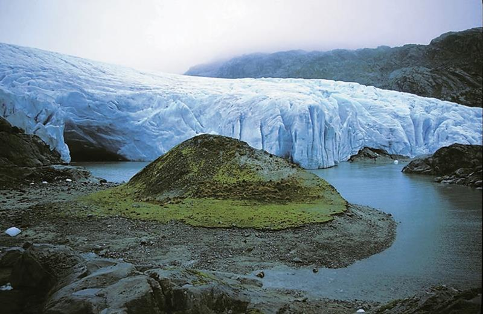

Фолгефонн
Фолгефонн, также Фолгефонни — общее название для трёх ледников на плато в районе Хордаланн, Норвегия. Они расположены на полуострове Фолгефонн на территориях коммун Одда, Йондал, Квиннхерад и Этне. Фолгефонн состоит из трёх ледников: Норде Фолгефонн, площадью 26 квадратных километров